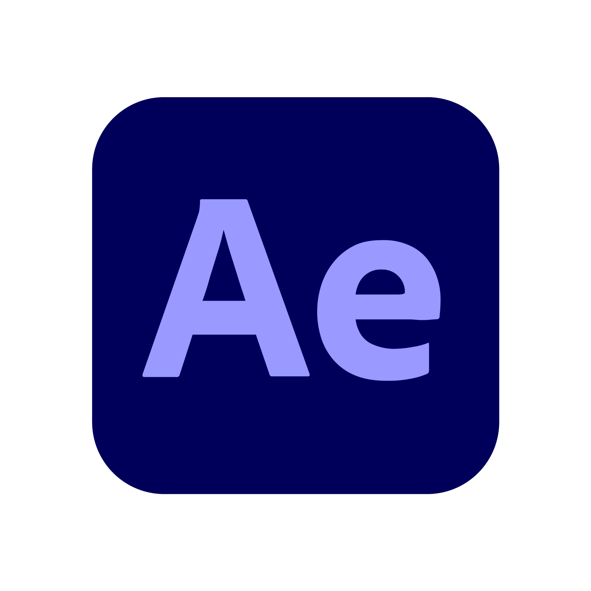

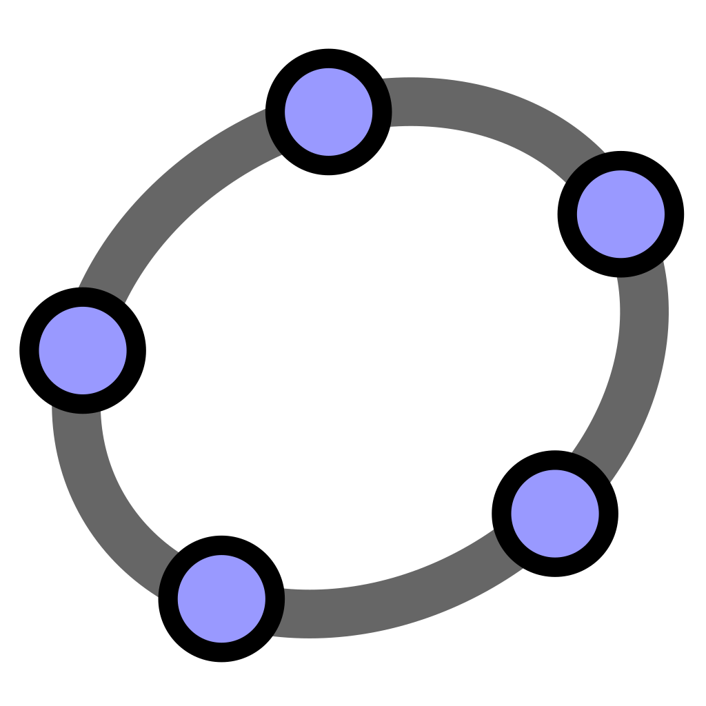
Video Editor Visual Storyteller Motion Graphics Creator Creative Content Creator Post-Production Enthusiast Creative Technologist Future Mathematics Educator
Ideas into Experiences. I'm Harshwardhan Singh Rao — passionate about turning raw footage and creative ideas into meaningful visual stories and engaging learning experiences.
"I tell stories through visuals, and I aspire to teach through them."
— Harshwardhan Singh Rao · Video Editor & Future Mathematics Educator
Selected
visual works
Short films, festival promotions, motion graphics, commercial advertisements, and creative campus productions.
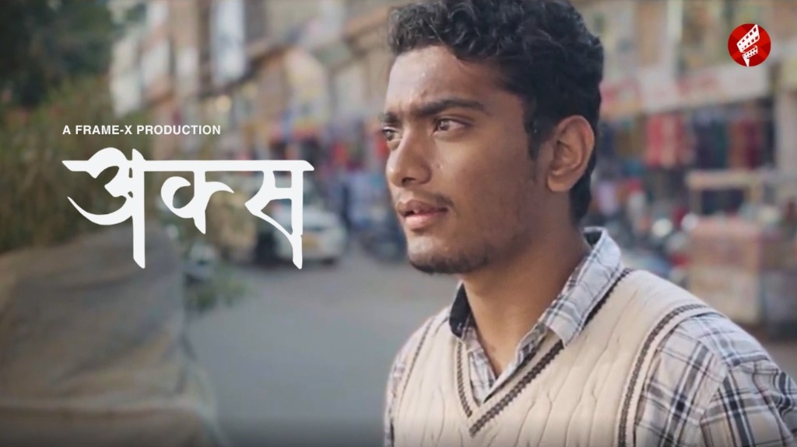
AKS — Inter IIT 7th Rank
Explores self-reflection, inner conflict, and identity. Visual storytelling through symbolic imagery, expressive pacing, cinematic color grading, and immersive sound design.
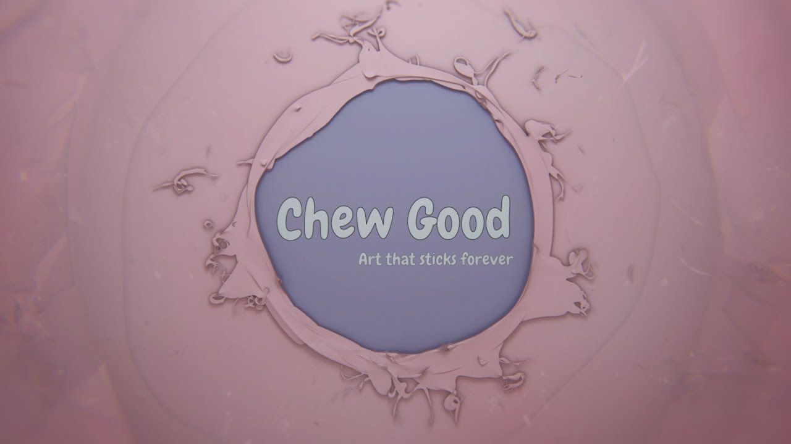
Chewgood — India Film Project
A fast-paced short film created for the India Film Project exploring choices and consequences through disciplined visual storytelling and post-production structure.
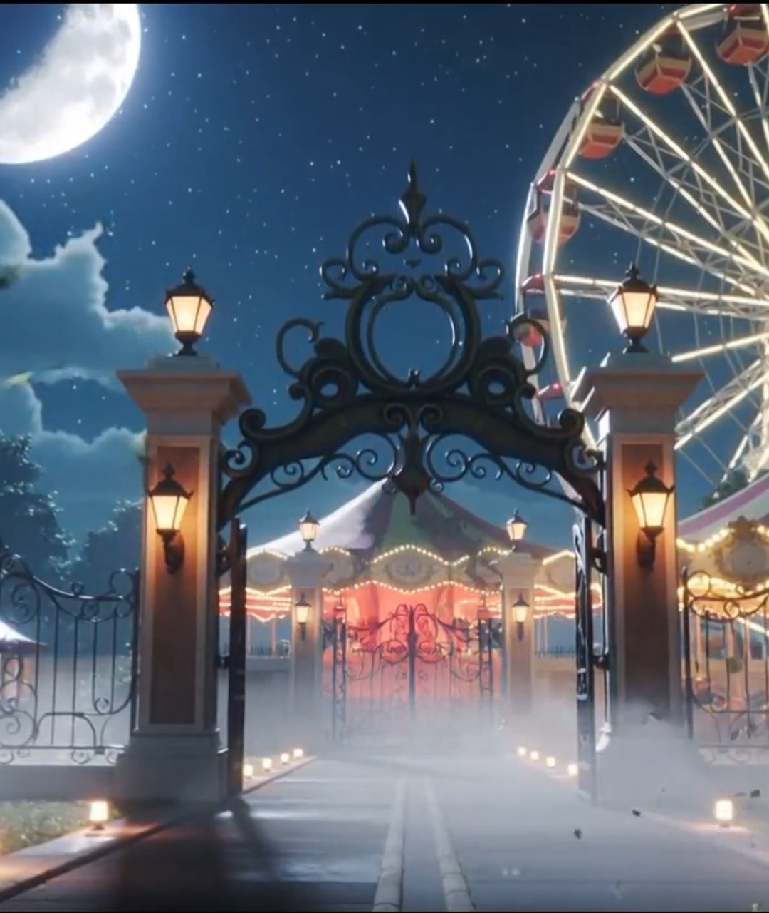
IGNUS Theme Reveal
Visual identity reveal for IIT Jodhpur's annual cultural festival. High-energy promotional editing, kinetic transitions, motion graphics, and festival branding.
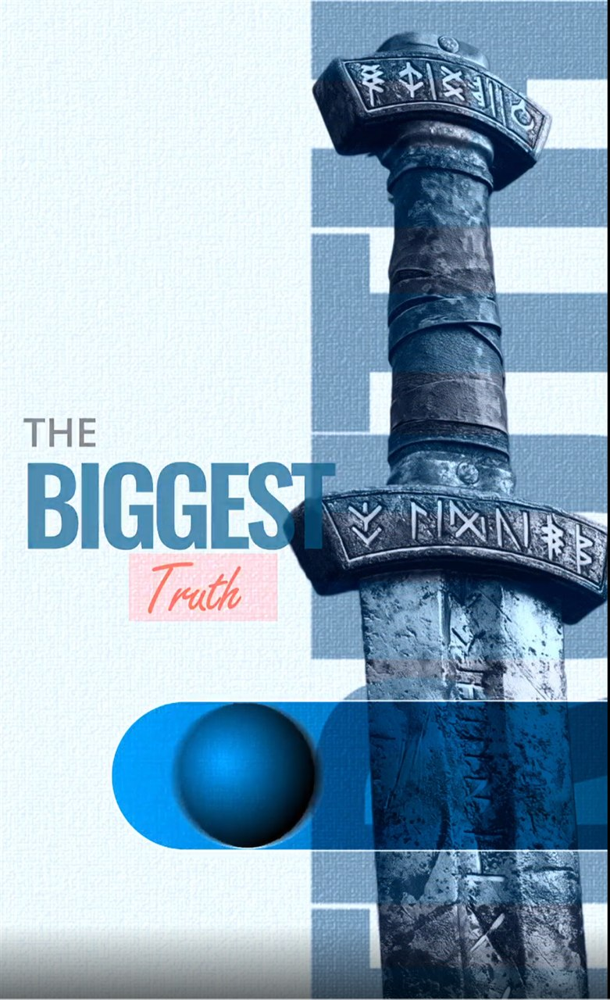
Truth Life — Motion Graphics
Exploration of typography animation, visual composition, and kinetic movement in After Effects to communicate powerful narrative concepts.

Kuku TV Advertisement
Commercial editing with strategic pacing, hooks, and clean post-production.
IGNUS Event Reels
High-tempo short-form content with sound synchronization and retention hooks.
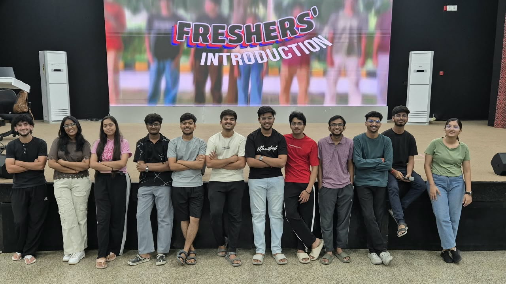
Freshers' Intro Videos
Main auditorium stage premiere introducing new students and celebrating campus culture at IIT Jodhpur.
Creative discipline meets technical precision. Two years of continuous experimentation in editing suites, camera teams, and digital media.
2+
Years of Video Editing experience
1+
Year of Motion Graphics & Animation
10+
Featured Projects & Experiments
8
Creative Software & Digital Platforms
Beyond editing:
Visual learning
Alongside my creative filmmaking journey, I am pursuing an Integrated Teacher Education Programme (B.Sc.–B.Ed.) in Mathematics at IIT Jodhpur. I believe abstract concepts don't belong solely in textbooks — animation, interactive games, and visual storytelling make mathematics intuitive and unforgettable.
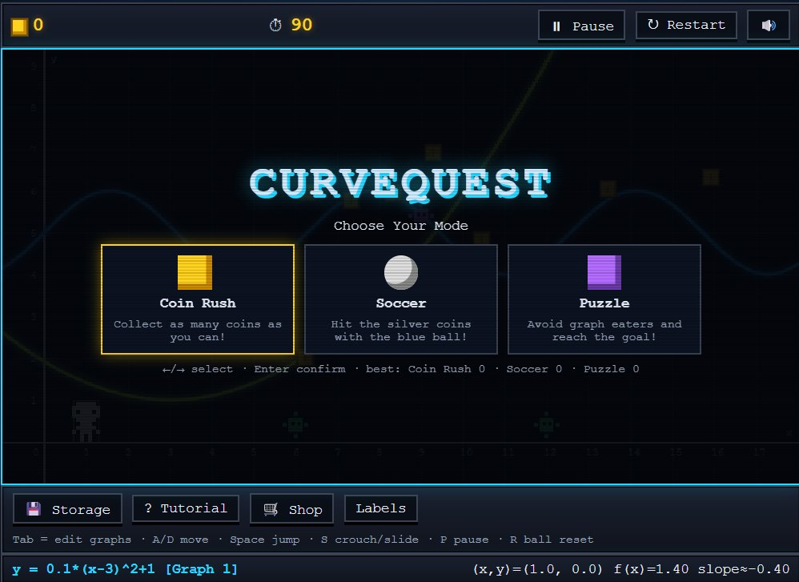
CurveQuest
Live App ↗An interactive educational platformer designed to introduce mathematical functions, coordinates, and curves through real-time gameplay. Allows learners to explore graphical concepts through trial, discovery, and experimentation.
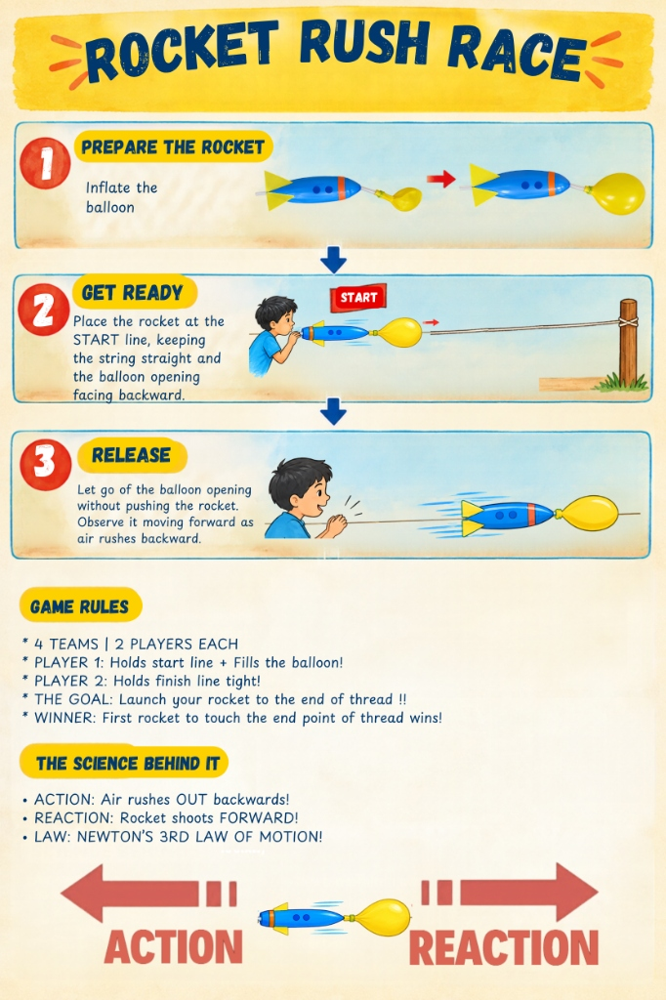
Rocket Rush & Friction Kit
View Poster ↗
Rocket Rush Race: Collaborative balloon-powered rocket racing demonstrating Newton's Third Law to government-school students and teachers under Dr. Rachel Philip's guidance.
Physical Friction Kit: Adjustable inclined ramp with interchangeable surfaces (sandpaper, cloth, foam, rubber) for empirical friction data collection.
📐 DIY Clinometer
Low-cost trigonometry tool for real-world height and angle measurement.
💡 Inquiry-Based Framework
Student-centred classroom model with peer investigation and activity assessment.
🏫 The Ideal School
Collaborative pedagogical blueprint exploring student autonomy and supportive learning.
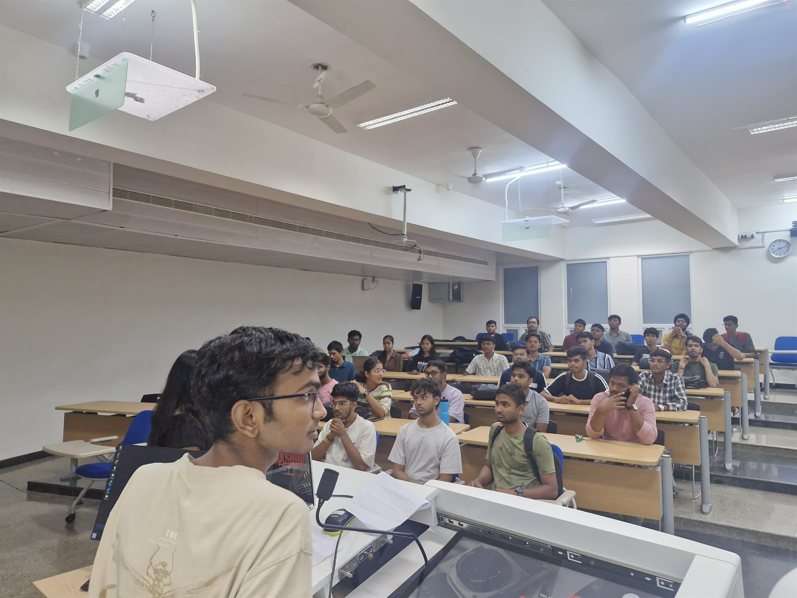
Pedagogy & Classroom Practicum
Delivering an instructional presentation and pedagogical session at the IIT Jodhpur Centre for Education, exploring student-centred learning models and visual mathematics demonstration.
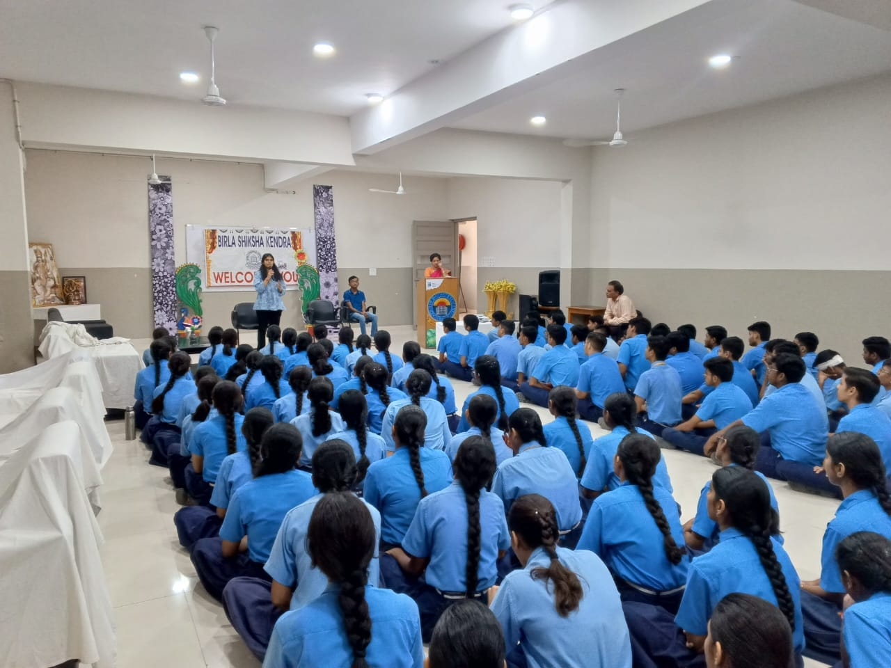
Hands-on Experiential Outreach
Conducting interactive physics and mathematics demonstrations (Rocket Rush Race & Friction Kits) in the school auditorium for educators and students to demystify scientific concepts.
Creative mind.
Visual storyteller.
Making ideas visible and experiences memorable.
My creative journey revolves around experimenting with different forms of visual communication. I work with raw footage, sound design, colour grading, motion graphics, and narrative pacing to create videos that captivate audiences and communicate ideas effectively.
Alongside serving as Joint Secretary of Frame-X (IIT Jodhpur's cinematography and editing society), I lead campus-wide cultural and media operations as Festival Coordinator of IGNUS '27, Head of Varchas '26, and Cultural Captain for Inter IIT 9.0. My work spans directing institutional productions like our 7th-rank Inter IIT short film AKS, orchestrating large-scale festival broadcasts, and crafting cinematic stories that inspire.
"For me, creativity is not limited to entertainment. It's a powerful way of communicating ideas and making people learn, feel, and experience something."
Experience &
education
Festival Coordinator
IGNUS '27 (Socio-Cultural Fest), IITJ
2026 – 2027
Coordinating IIT Jodhpur's flagship annual socio-cultural festival. Leading creative direction, festival media operations, national artist nights, visual campaigns, and cross-functional student teams.
Head — Media & Creative Operations
Varchas '26 (Sports Fest), IITJ
2026
Heading the full media operations for Northern India's premier inter-collegiate sports festival. Overseeing sports event visual documentation, live coverage, dynamic match recap reels, and post-production workflows.
Cultural Captain
Inter IIT Cultural Meet 9.0
2025 – 2026
Captained and represented IIT Jodhpur's cultural contingent at the Inter IIT Cultural Meet. Led team strategy and cinematic production for competitive filmmaking, achieving 7th rank nationally with short film AKS.
Joint Secretary — Filmmaking Society
Frame-X, IIT Jodhpur
2025 – 2026
Creative planning, post-production lead, and student coordination. Led AKS (7th Rank Inter IIT), IGNUS Theme Reveal, Class Song 2025, and Freshers introduction videos.
YouTube Creator & Video Editor
Tech Buddhi Digital Media
Ongoing
Technology, informational, and educational digital content creation. Focus on visual retention hooks, script-based storytelling, dynamic pacing, and audience growth.
Video Editor & Motion Designer
Independent Projects & Brands (Slyder)
2+ Years
Commercial ad creation and reel editing for brands including Slyder, narrative short films (Chewgood for IFP), motion graphics (Truth Life), commercial ads (Kuku TV), and high-retention social media content.
Educational Visual Resource Designer
Centre for Education, IIT Jodhpur
2025 – 2026
Interactive mathematical learning games (CurveQuest), experiential learning kits (Rocket Rush, Friction Kit), and inquiry-based pedagogy frameworks.
B.Sc.–B.Ed. Mathematics (ITEP)
Indian Institute of Technology Jodhpur
2024 – 2028
Centre for Education. Integrated dual-major undergraduate programme blending rigorous mathematics, teacher education, educational psychology, pedagogy, and technology-integrated learning.
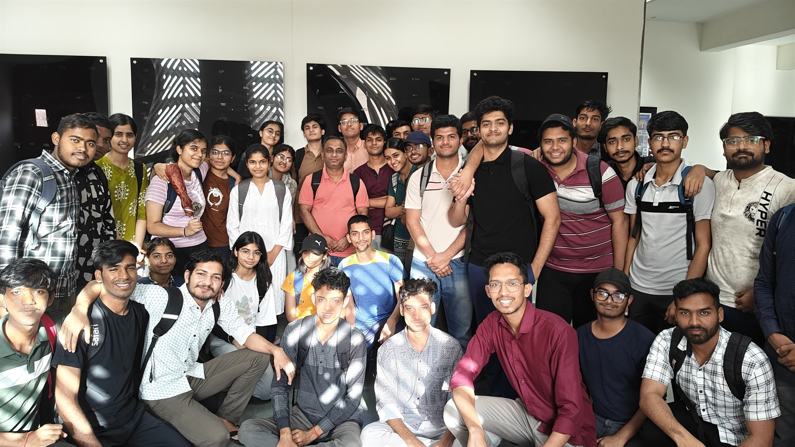
Senior Secondary Education — Class XII
Birla Shiksha Kendra (B.S.K.), Chittorgarh
Science & Mathematics (PCM)
Senior secondary education with focus on Physics, Chemistry, and Higher Mathematics at Birla Shiksha Kendra, Madhavnagar, Chittorgarh, Rajasthan.
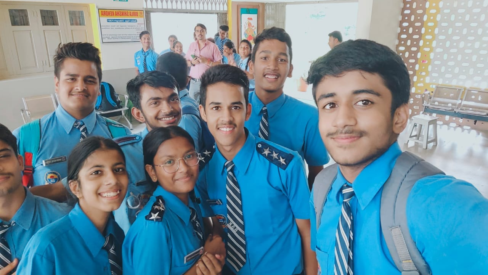
Secondary Education — Class X
Birla Shiksha Kendra (B.S.K.), Chittorgarh
Secondary Schooling
Comprehensive secondary schooling with academic distinction at Birla Shiksha Kendra, Chittorgarh.
Behind the lens &
creative journey
A cinematic archive of live festival productions, on-location shoots, campus filmmaking expeditions, and authentic moments from the journey.
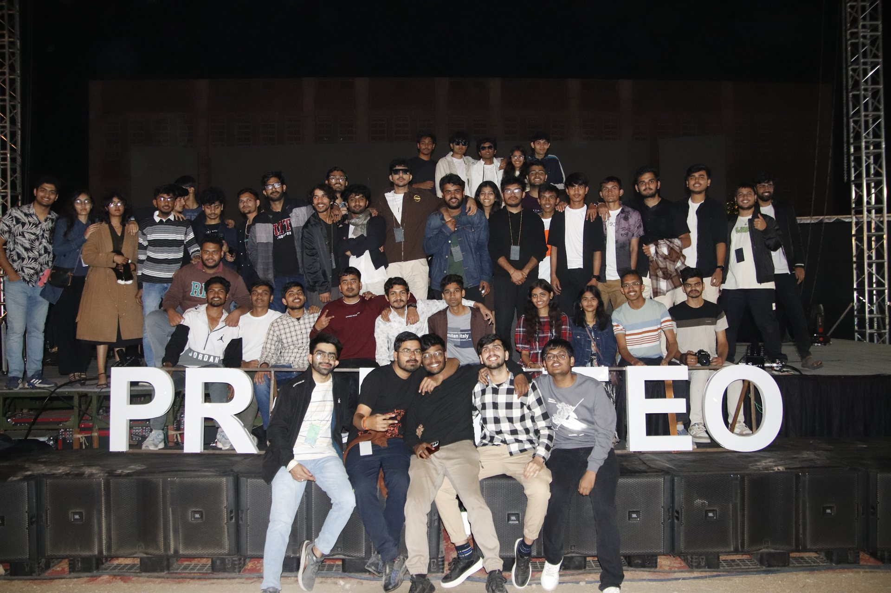
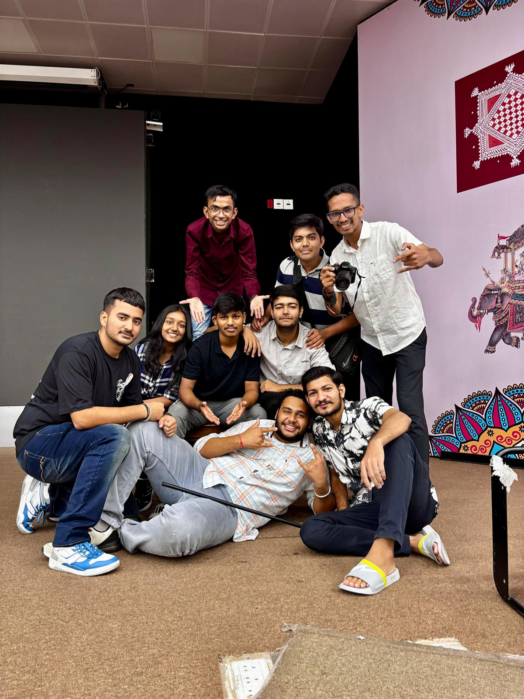
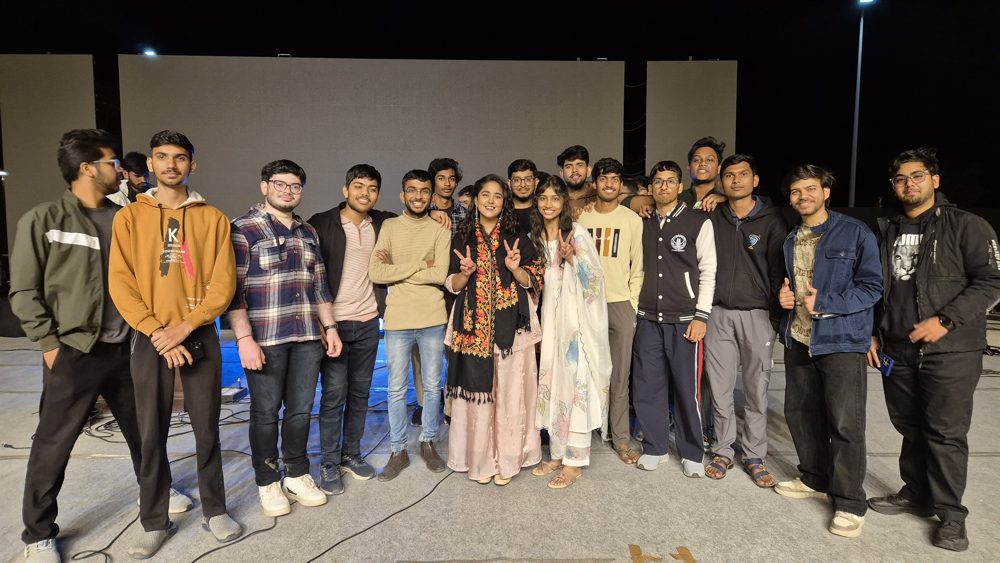
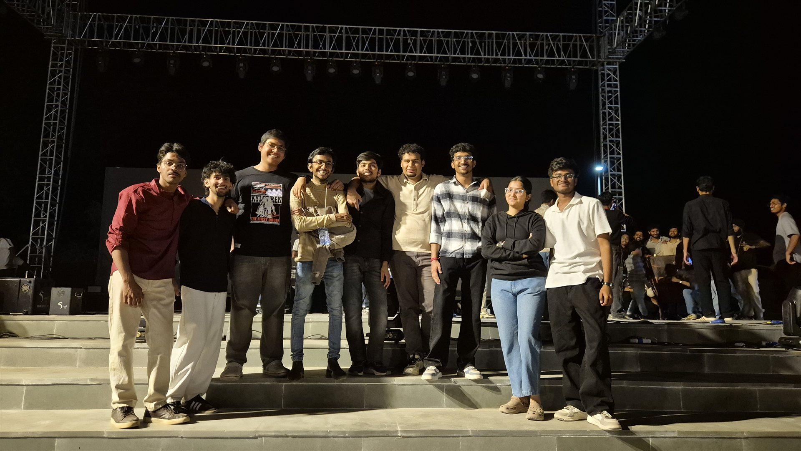
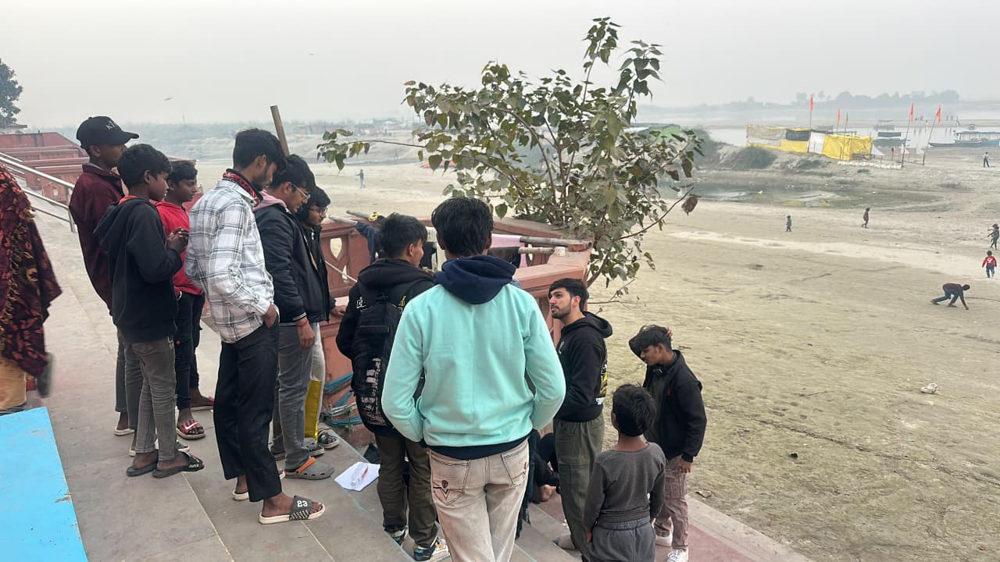
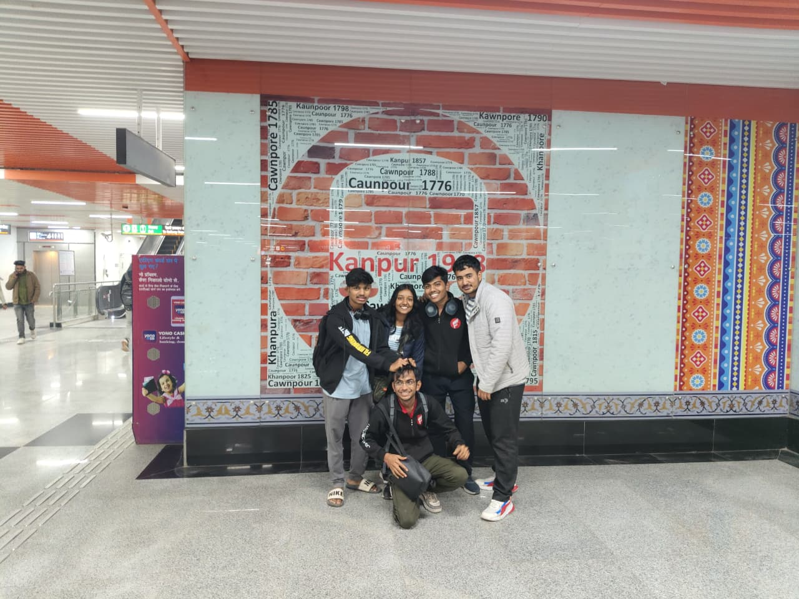
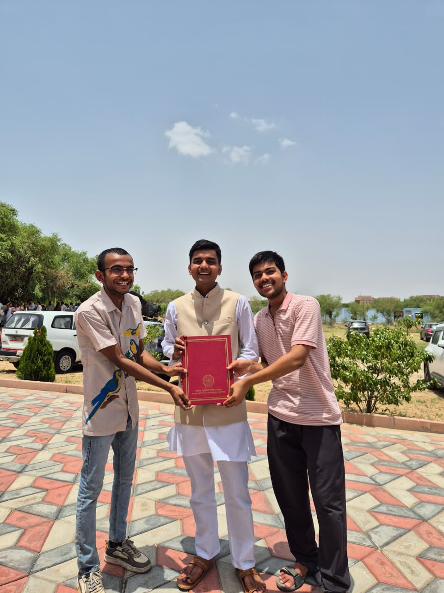
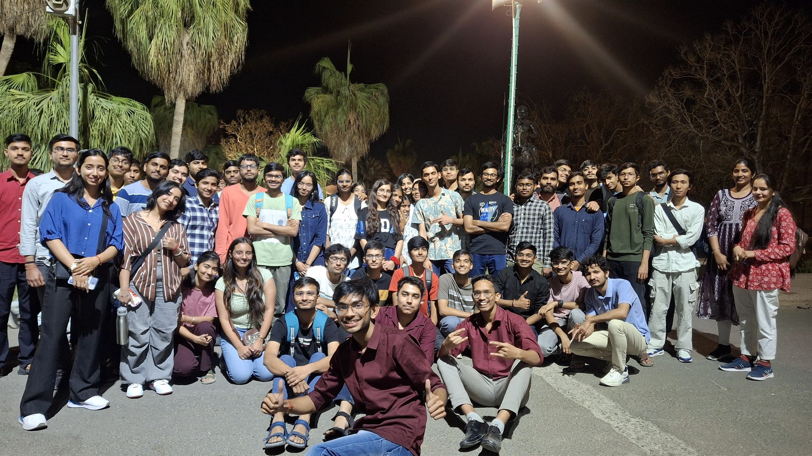
Good Energy On & Off Set
Creativity is serious craft, but genuine joy makes the work unforgettable. Birthday celebrations with the crew, spontaneous smiles, and authentic energy.
Creative tools &
technology
The software, engines, and platforms I employ to craft cinematic narratives and interactive visual models.
Video Post-Production, Motion & 3D
AI Generation, Digital Platforms & EdTech
Have a story to tell, an idea to create, or a project to collaborate on?
I'm always interested in creative collaborations, interesting projects, and opportunities to learn something new. Feel free to reach out. Let's make something meaningful.
Direct Email
harshwardhansingh619@gmail.comInstitute Email
b24edm003@iitj.ac.inLocation
Jodhpur, Rajasthan, India